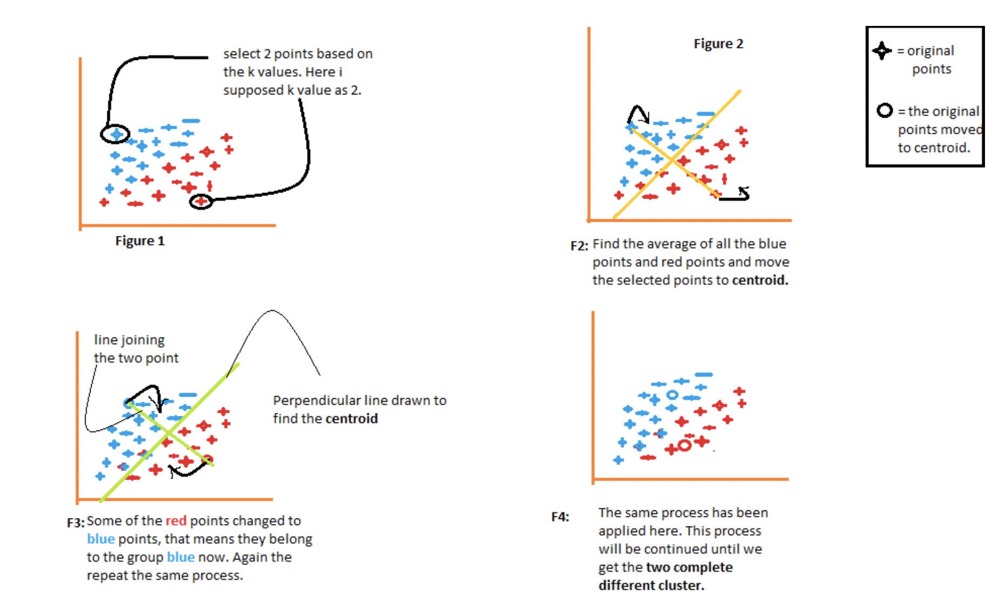
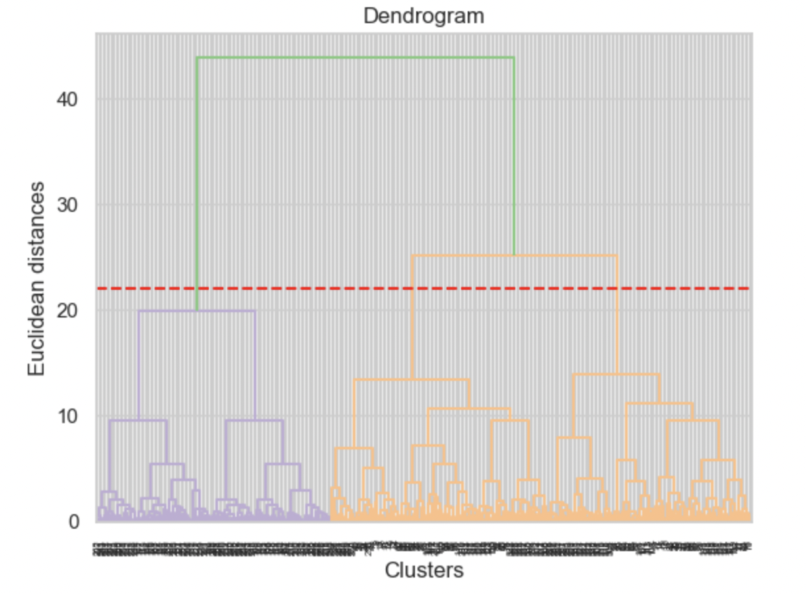

Clustering
Introduction
Finally, we come to the topic of clustering. Clustering is quite different from what we did in the previous tabs. In the previous tabs, different kinds of classifications were performed on the data, including naive bayes, decision tree etc. As we know, classfication or regression belongs to the supervised learning which is a machine learning approach that’s defined by its use of labeled datasets. Clustering is a method of unsupervised learning that takes data that does not contain any labels or explicit instructions on what to do with it. The goal is for the learning algorithm to find structure in the input data on its own. Kyle Polich defined unsupervised learning as a grab bag for machine learning tasks linked together only by their common properties. (data skeptic 2022)
In this section, I will perform three different algorithms (k-means, DBSCAN, Agglomerative) to cluster the quantitative dataset which is previously cleaned. The ultimate goal of cluster analysis is to partition our data into distinct sub-groups or clusters such that observations belonging to the same cluster are very similar or homogeneous and observations belonging to different clusters are different or heterogeneous. Elbow method and silloutte score will be utilized and applied to determine the optimal model.
Theory
K-means
K-Means is one of the most popular “clustering” algorithms. K-means stores \(k\) centroids that it uses to define clusters. A point is considered to be in a particular cluster if it is closer to that cluster’s centroid than any other centroid. Usually Euclidean distance or Manhattan distance is calculated in this step for assigning data to the closest centroid. After every point has been assigned, the centroid is moved to the average of all of the points assigned to it. Then the process repeats: every point is assigned to its nearest centroid, centroids are moved to the average of points assigned to it. The algorithm is done when no point changes assigned centroid. Let us understand the above steps with the help of the figure because a good picture is better than the thousands of words.

One of the most challenging tasks in this clustering algorithm is to choose the right values of k. The squared distance between each point and its cluster center is the required variation. The aim of k-means clustering is to find these k clusters and their centers while reducing the total error. Two popular model selection methods are the Elbow method and the Silhouette Method.
Elbow Method
Elbow method allows us to calculate the Within-Cluster Sum of Square which is the distance of objects within each cluster. A smaller distance indicate a tighter cluster we have, which is considered good. There are two values that can return this ‘tightness’ – distortion and inertia. Distortion is the average of the euclidean squared distance from the centroid of the respective clusters. Inertia is the sum of squared distances of samples to their closest cluster center. The reason why it is called the Elbow method is that when we plot the inertia and distortion, the plot looks like an Elbow. As the number of clusters increases, those values will start to decrease. We almost always look for a smaller distortion and inertia, but we need to be aware of over-clustering.
Silhouette Score
Silhouette score measures how seperate two resulting clusters is. A good cluster should large inter-group distance. The range of the Silhouette value is between +1 and -1. A high value is desirable and indicates that the point is placed in the correct cluster. If many points have a negative Silhouette value, it may indicate that we have created too many or too few clusters. The Silhouette Value s(i) for each data point i is defined as follows: \[ s(i) = \frac{b(1)-a(i)}{max(a(i),b(i))}, if |C_{i}| > 1 \]
and \[ s(i) = 0, if |C_{i}| = 1 \]
DBSCAN
Two key parameters of DBSCAN in sklearn are eps and min_pts.
- min_samples:
The minimum number of points (a threshold) to define a core point. If min_sample is 4, then a point needs at least 4 neighbors to be considered core point.
- eps (\(\epsilon\))
The distance that specifies the neighborhoods. Two points are considered to be neighbors if the distance between them are less than or equal to eps.
Density-based spatial clustering of applications with noise (DBSCAN) is one of the most common clustering algorithms and also most cited in scientific literaliture. Density-based techniques are more efficient on non-normal shaped clusters than partition-based (k-means) and hierarchical clustering (agglomerative) techniques. The main idea behind DBSCAN is that a point belongs to a cluster if it is close to many points from that cluster. The starting point of the cluster is selected at random at it’s neighborhood area is determined using radius eps. If there are at least min_sample number of points in the neighborhood, the point is marked as core point and a cluster formation starts. If not, the point is marked as noise. Once a cluster formation starts, all the points within the neighborhood of initial point become a part of that cluster. If these new points are also core points, the points that are in the neighborhood of them are also added to the cluster. The cluster will stop adding new points if there are no core points in the neighbourhood.
Agglomerative
Agglomerative Clustering is a type of hierarchical clustering algorithm. It is an unsupervised machine learning technique that divides the population into several clusters such that data points in the same cluster are more similar and data points in different clusters are dissimilar. Agglomerative Clustering is a bottom-up approach, initially, each data point is a cluster of its own, further pairs of clusters are merged as one moves up the hierarchy.
Dendrograms are a diagrammatic representation of the hierarchical relationship between the data-points. It illustrates the arrangement of the clusters produced by the corresponding analyses and is used to observe the output of hierarchical (agglomerative) clustering. We can decide the optimal cluster size by looking at the dendrogram. This is an example of a dendrogram:
